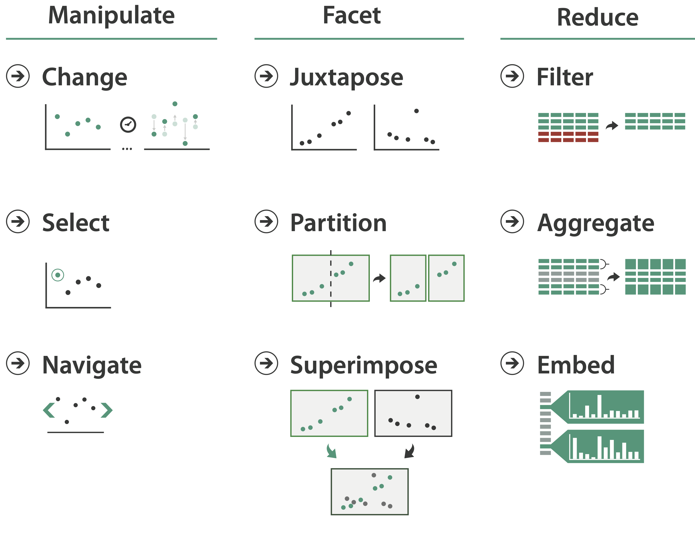
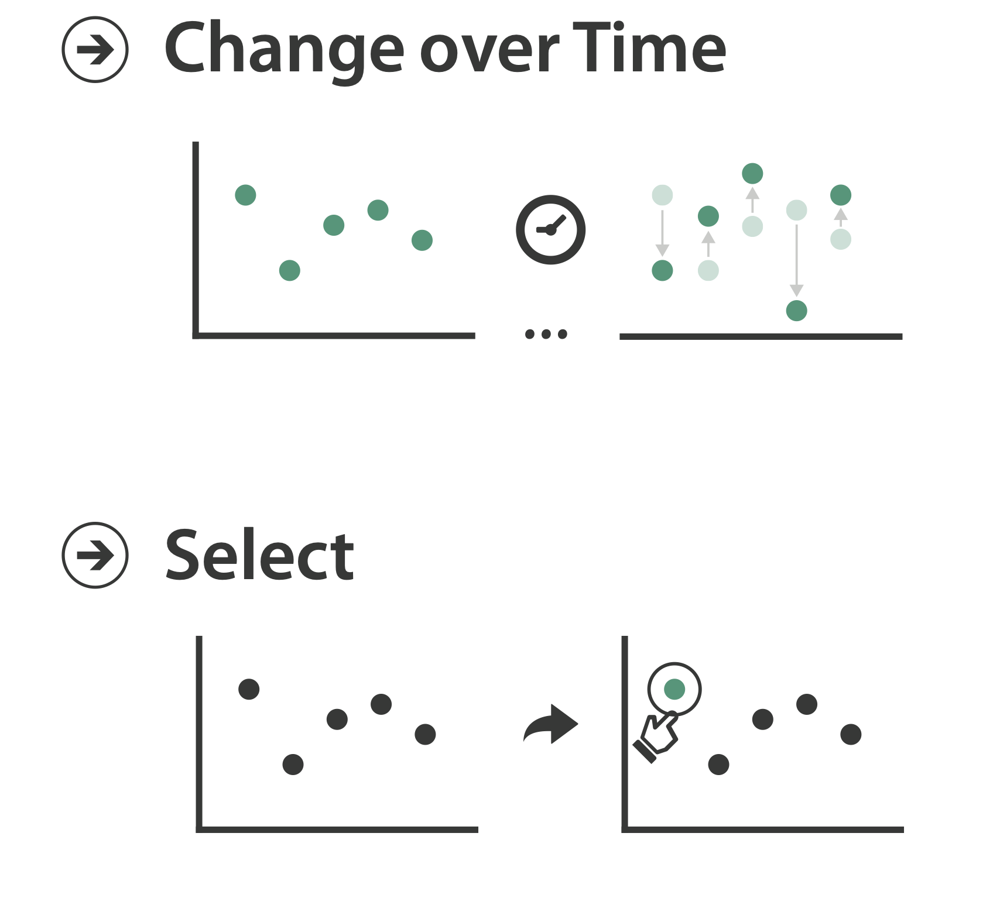
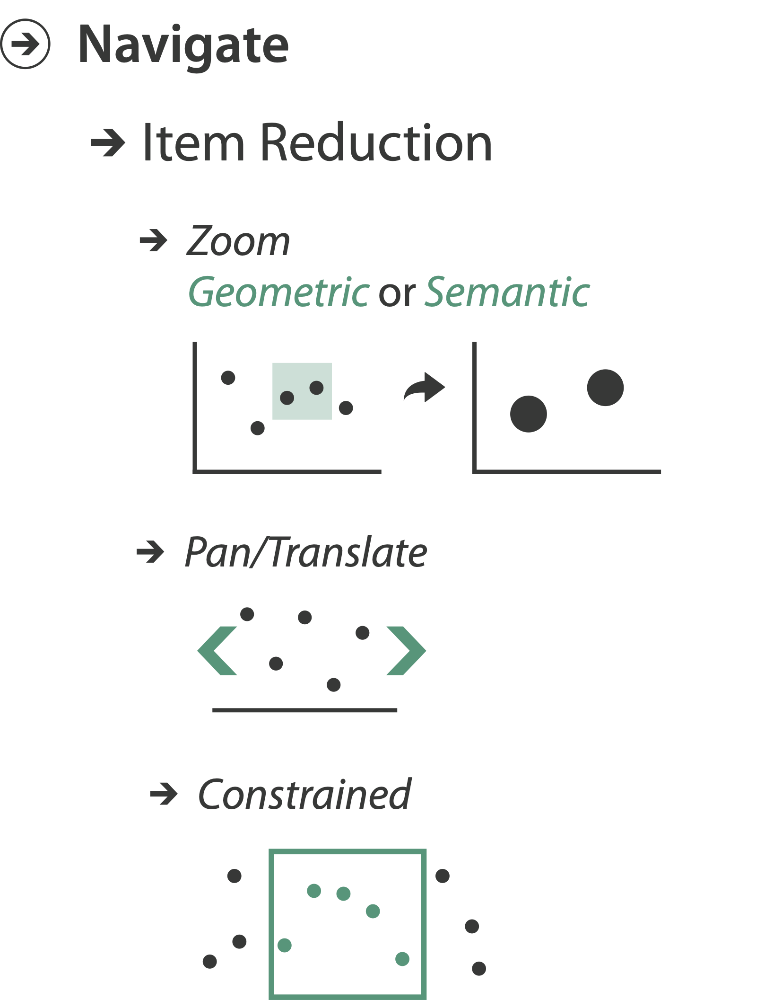
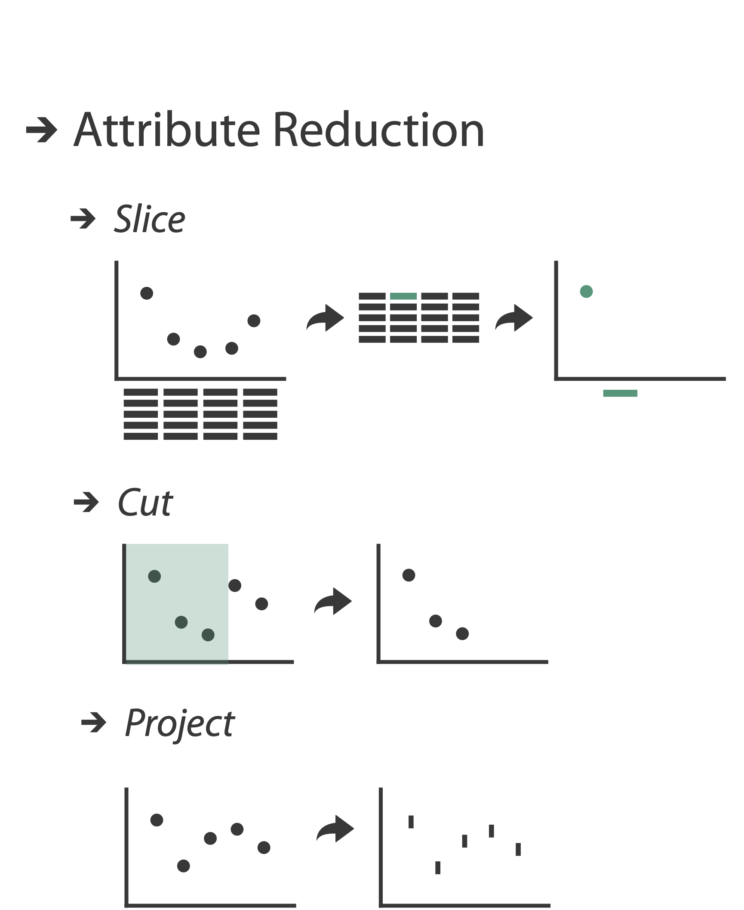
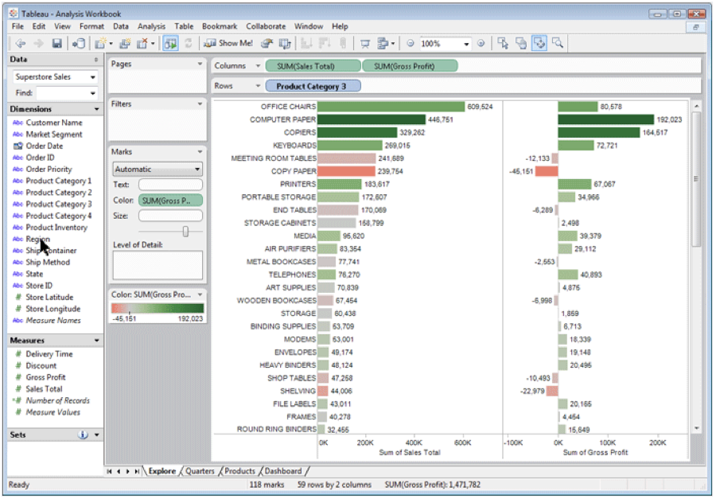
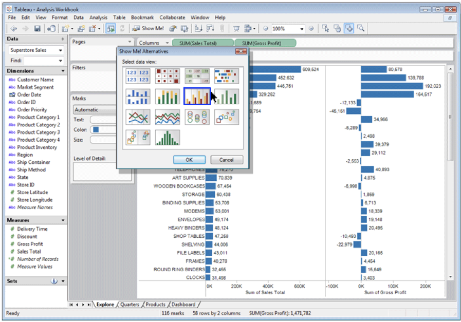
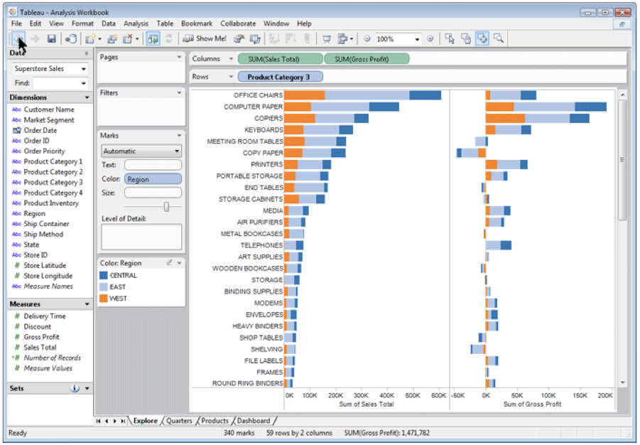
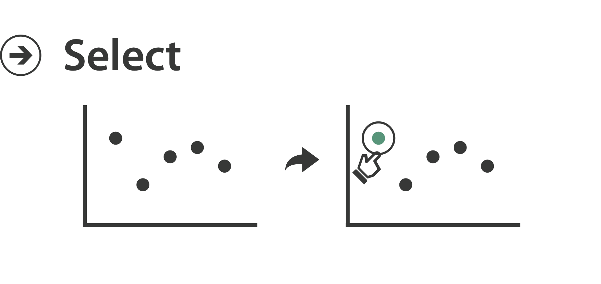
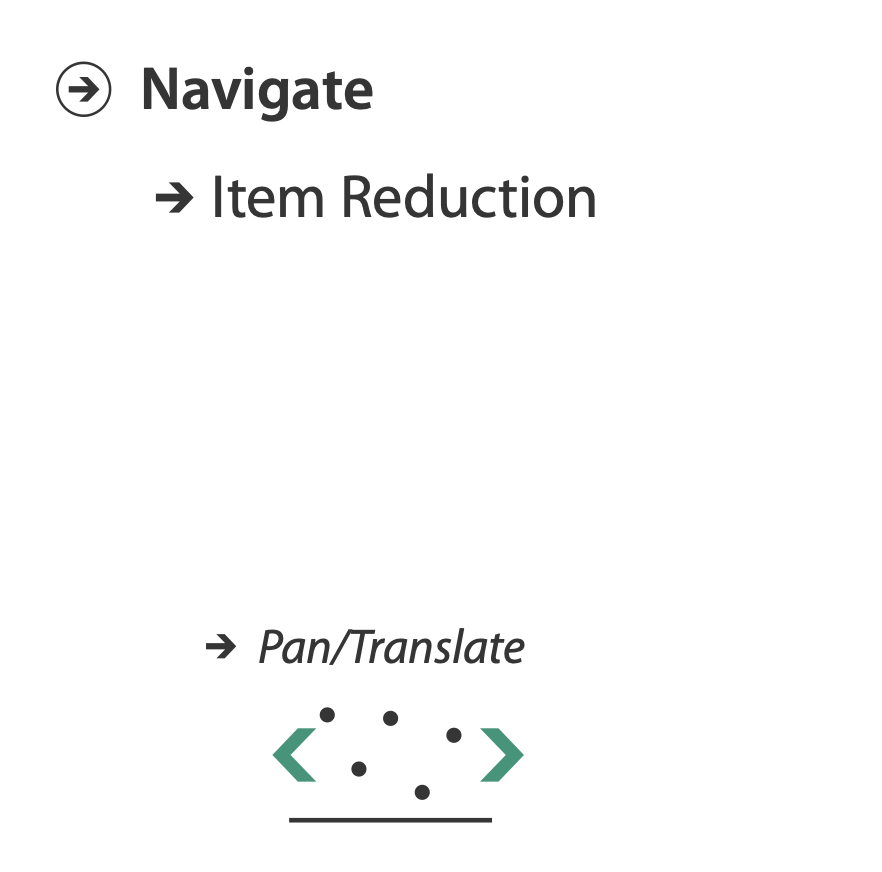
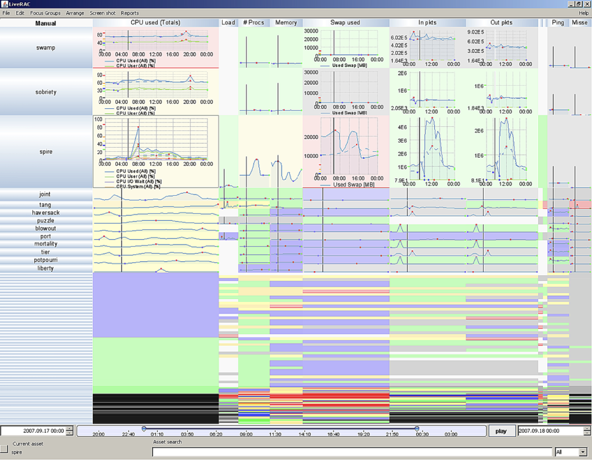

Manipulate Views
MIDS W209: Information Visualization
John Alexis Guerra Gómez | john.guerra[at]gmail.com | @duto_guerra
https://johnguerra.co/lectures/MIDS_W209_Information_Visualization/10_Manipulate_Views/
https://johnguerra.co/lectures/MIDS_W209_Information_Visualization/10_Manipulate_Views/
Partially based on slides from Tamara Munzner
What we are going to learn
Manipulate views
How to Handle Complexity: 1 Previous Strategy + 3 More

- Derive new data to show within view
- Change view over time
- Facet across multiple views
- Reduce items/attributes within single view

Idiom Design Choices: Interaction
Manipulate



Change Over Time
- Change any of the other choices
- Encoding itself
- Parameters
- Arrange: rearrange reorder
- Aggregation level, what is filtered...
- Why change?
- One of four major strategies
- Change over time
- Facet data by partitioning into multiple views
- Reduce amount of data shown within view
- Most obvious, powerful, flexible
- Interaction entails change
- Encoding itself
- Parameters
- Arrange: rearrange reorder
- Aggregation level, what is filtered...
- Change over time
- Facet data by partitioning into multiple views
- Reduce amount of data shown within view
Idiom: Re-encode
System: Tableau

Idiom: Reorder
System: DataStripes
- What: table with many attributes
- How: data-driven reordering by selecting column
- Why: find correlations between attributes
Idiom: Change Alignment
- Stacked bars
- Easy to compare
- First segment
- Total bar
- Align to different segment
- Supports flexible comparison
LineUP
http://vcg.seas.harvard.edu/files/pfister/files/2013_infovis_lineup.mp4LineUP D3
https://observablehq.com/@john-guerra/lineupIdiom: Animated Transitions
- Smooth interpolation from one state to another
- Alternative to jump cuts, supports item tracking
- Best case for animation
- Staging to reduce cognitive load
- Example: animated transitions in statistical data graphics
 vimeo.com/19278444[Animated Transitions in Statistical Data Graphics. Heer and Robertson. IEEE TVCG (Proc InfoVis 2007) 13(6):1240-1247, 2007]
vimeo.com/19278444[Animated Transitions in Statistical Data Graphics. Heer and Robertson. IEEE TVCG (Proc InfoVis 2007) 13(6):1240-1247, 2007]
Select and Highlight
- Selection: basic operation for most interaction
- Design choices
- How many selection types?
- Interaction modalities
- Click/tap (heavyweight) vs. hover (lightweight but not available on most touchscreens)
- Multiple click types (shift-click, option-click, …)
- Proximity beyond click/hover (touching vs nearby vs distant)
- Application semantics
- Adding to selection set vs replacing selection
- Can selection be null?
- ex: toggle so nothing selected if click on background
- Primary vs secondary (ex: source/target nodes in network)
- Group membership (add/delete items, name group, …)

Selection with brush
https://observablehq.com/@john-guerra/scatterplot-brushNavigate: Changing viewpoint/visibility
- Change viewpoint
- Changes which items are visible within view
- Camera metaphor
- Pan/translate/scroll
- Move up/down/sideways

Idiom: Semantic Zooming
- Semantic zoom
- Alternative to geometric zoom
- Resolution-aware layout adapts to available space
- Goal: legible at multiple scales
- Dramatic or subtle effects
- Visual encoding change
- Colored box
- Sparkline
- Simple line chart
- Full chart: axes and tickmarks

LiveRAC
Geometric Zoom
http://blockbuilder.org/mbostock/3680958by mbostockSemantic Zoom
http://blockbuilder.org/mbostock/3681006by mbostockFurther Reading: Ch. 11 Manipulate
- Starting Simple - Adding Value to Static Visualisation Through Simple Interaction.. A. Dix and G. Ellis. Proc. Advanced Visual Interfaces (AVI) 1998, 124-134.
- Animated Transitions in Statistical Data Graphics Jeffrey Heer and George G. Robertson. IEEE TVCG (Proc. InfoVis 2007) 13(6): 1240-1247, 2007.[Archived version]
- Selection: 524,288 Ways To Say 'This Is Interesting'. Graham J. Wills. Proc. InfoVis 1996, p 54-61.
- Pad++: A Zooming Graphical Interface for Exploring Alternate Interface Physics Ben Bederson, and James D Hollan, Proc UIST 94.
- LiveRAC - Interactive Visual Exploration of System Management Time-Series Data. Peter McLachlan, Tamara Munzner, Eleftherios Koutsofios, Stephen North. Proc. Conf. on Human Factors in Computing Systems (CHI) 2008, 1483-1492.
- Rapid Controlled Movement Through a Virtual 3D Workspace Jock Mackinlay, Stuart Card, and George Robertson. Proc SIGGRAPH '90, pp 171-176.
- Smooth and Efficient Zooming and Panning. Jack J. van Wijk and Wim A.A. Nuij, Proc. InfoVis 2003, p. 15-22.